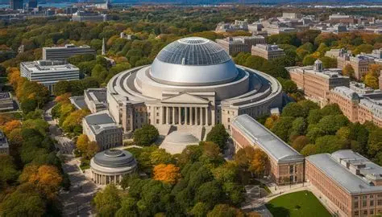
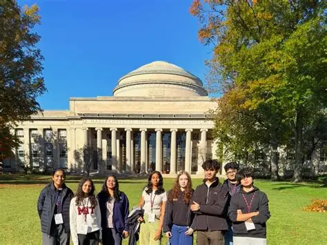

Massachusetts Institute
of Technology

MIT Campus
Located along the Charles River in Cambridge, Massachusetts, the 168-acre MIT campus seamlessly blends neoclassical landmark design with world-famous modern architecture, stretching from the iconic Great Dome at Killian Court to Frank Gehry’s deconstructivist Stata Center and Kendall Square's bustling tech hub.

Students
MIT students are intensely driven, collaborative problem-solvers who embrace a hands-on "Mind and Hand" philosophy across rigorous STEM and humanities programs. Representing over 130 countries, this diverse community relies heavily on teamwork to tackle coursework.
About Campus
Located at 77 Massachusetts Avenue, Cambridge, MA 02139, the Massachusetts Institute of Technology (MIT) spans a 168-acre urban campus stretching over a mile along the north bank of the Charles River, directly opposite Boston. Its iconic main buildings feature interconnected corridors—most notably the "Infinite Corridor"—centered around Killian Court and the recognizable Great Dome. World-renowned for its rigorous academic ecosystem, MIT is organized into five schools and one college, offering top-tier degree programs in Engineering, Computer Science, Physical Sciences, Architecture, Management (via the Sloan School of Management), and Biological Sciences.